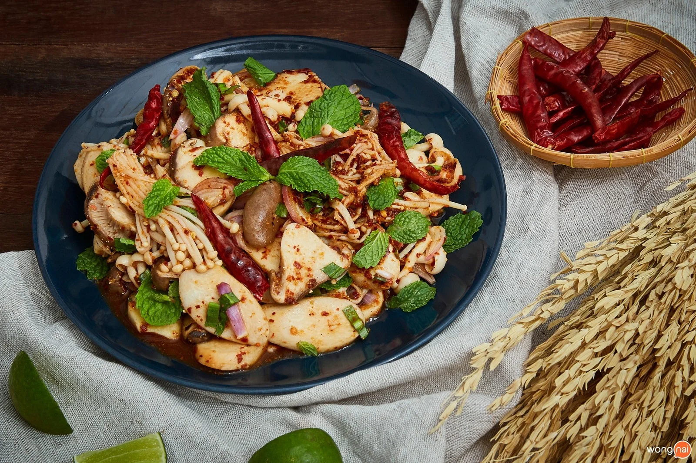

ลาบเห็ด
300 Kcal/เสิร์ฟ
วันนี้จะชวนเพื่อน ๆ เข้าครัวมาทำเมนู “ลาบเห็ด” เมนูเพื่ออาหารเพื่อสุขภาพง่าย ๆ สไตล์อีสาน อร่อยครบรส
ไม่ว่าจะเป็นรสเผ็ด เปรี้ยว และหวานนิดหน่อย โดยวันนี้เราจะใช้ 3 เห็ดในการทำ
ถ้าพร้อมแล้วรีบสวมผ้ากันเปื้อนแล้วตามเข้าครัวมาเลยจ้า
วัตถุดิบเมนู ลาบเห็ด
วิธีทำ “ลาบเห็ด” เมนูอาหารเพื่อสุขภาพ รสแซ่บ กินไม่เบื่อ!
วัตถุดิบ
- เห็ดเข็มทอง 150 กรัม
- เห็ดชิเมจิ 150 กรัม
- เห็ดออรินจิ 150 กรัม
- น้ำปลา 4 ช้อนโต๊ะ
- น้ำมะนาว 4 ช้อนโต๊ะ
- น้ำตาลทราย 1 ช้อนชา
- พริกป่น 2 ช้อนโต๊ะ
- ผักชีฝรั่งซอย ½ ถ้วย
- ข้าวคั่ว 2 ช้อนโต๊ะ
- หอมแดงซอย ¼ ถ้วย
- พริกแห้งทอด ตามชอบ
- ใบสะระแหน่
วิธีทำ
STEP 1 : เตรียมเห็ด
-นำเห็ดเข็มทอง เห็ดชิเมจิ และเห็ดออรินจิ ไปล้างให้สะอาด หั่นเป็นชิ้น
-นำไปลวกจนสุก
ใส่เห็ดลงไปลวกในน้ำเดือด ลวกจนสุกแล้วตักขึ้นพักไว้
STEP 2 : ทำลาบ
-ใส่น้ำปลาลงในชามผสม น้ำมะนาว น้ำตาลทราย พริกป่น และข้าวคั่ว คนให้เข้ากันจนน้ำตาลทรายละลาย
-ใส่หอมแดงซอย และผักชีฝรั่งซอย คนให้เข้ากัน
ใส่เครื่องปรุงลงไปคนให้เข้ากัน ใส่เห็ดที่ลวกไว้ลงไปคลุก
STEP 3 : จัดเสิร์ฟ
-ใส่เห็ดที่ลวกเตรียมไว้ลงไป และคนให้กัน
-ตักใส่จาน โรยใบสะระแหน่ และพริกแห้งทอด พร้อมเสิร์ฟจ้า

ตกแต่งด้วยพริกแห้งทอด พร้อมเสิร์ฟจ้า
โอ้โห!!! ทำง่ายมาก “ลาบเห็ด” เมนูอาหารเพื่อสุขภาพ แซ่บแบบอีสาน เพื่อน ๆ สามารถเพิ่มเห็ดได้ตามใจชอบเลย หรือถ้าอยากได้โปรตีนเพิ่มก็ใส่หมูสับลงไป ถ้าใครลองทำแล้วอย่าลืมส่งรูปมาอวดกันบ้างนะ